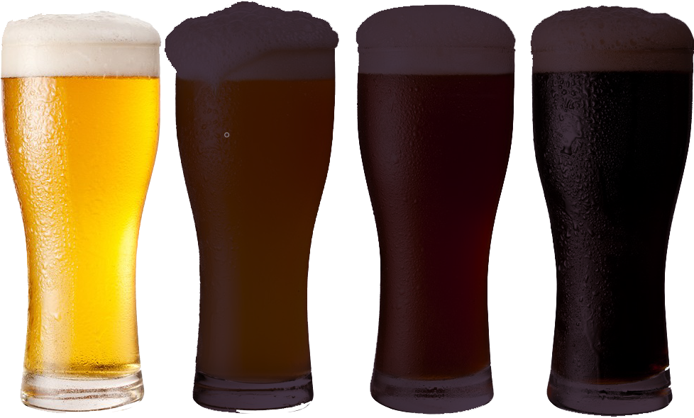
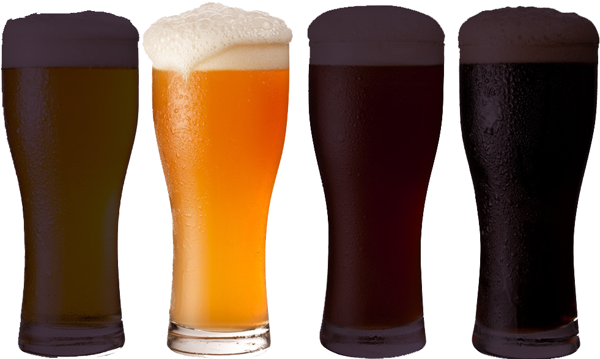
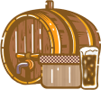
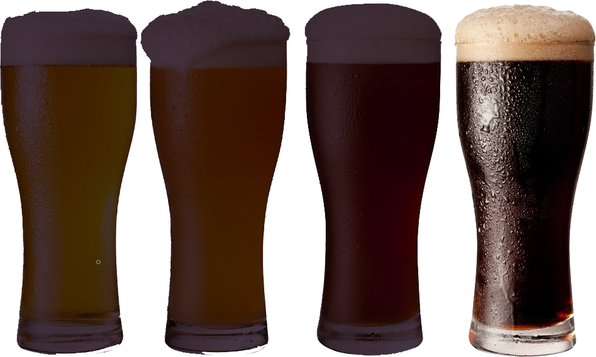
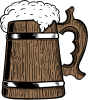
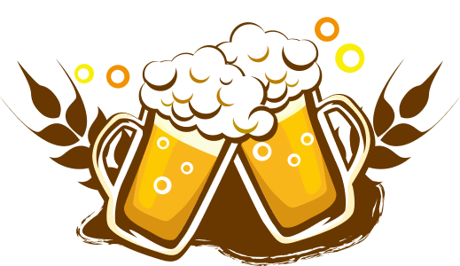
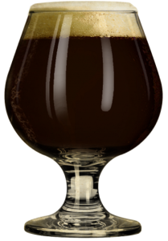
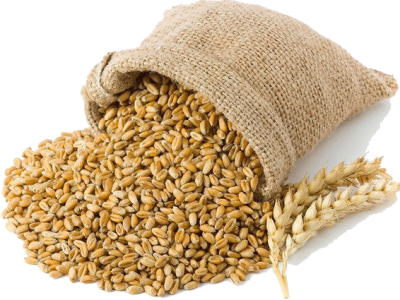

World types of Beer
STOP DRINKING SHIT BEER. START BREWING AWESOME BEER
Beer Styles
The types of beer can be broken down into hundreds of different styles, all with unique flavors, colors, and aromas. Two characteristics that are used to describe styles of beer are alcohol by volume (ABV) and international bitterness unit (IBU).
What Is ABV?
ABV stands for alcohol by volume and represents the percentage of alcohol in the beer. The amount of alcohol in the brew can actually affect the taste of the beer. Beers with a higher ABV have a more bitter flavor. In very strong beers, the alcohol can numb the tongue and neutralize the taste, so additional flavors are added to compensate. Brewers use ABV to achieve the perfect balance between sweetness and bitterness.
What Is IBU?
IBU stands for international bitterness unit and is a measurement of the number of bitter flavor compounds in a beer. The IBU scale starts at zero and has no upper limit, but most beers fall between 5 IBUs and 120 IBUs. Anything higher than 120 can't be detected by the average palate.
LAGER
-
PALE LAGER
Crisp & Clean white subtlebitterness
 -

PILSNER
Hoppier than a pale lager, yet still light & drinkable
 -

DUNKEL
Distinctly malt-forward, but fairly smooth
 -

BOCK
Strong, yet sweet, malt flavor balanced by hoppy bitterness
ALE
-
WHEET BEER
light in color and flavor with little to no brightness
-

PALE ALE
Flavors vary, but are typically quite hoppy

-

PORTER
Mild, malty & sweet with notes of caramel & chocolate
-

STOUT
Strong roasted malt flavor, with coffee & chocolate notes